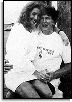

|
PART II PUBLISH OR HOLD BACK By now it was after 10 p.m., fast approaching deadline for the bulk of The Herald's Sunday press run. In the confrontation interview, Hart had confirmed the essential elements that the reporters felt were needed to confirm the personal relationship that the caller had said existed. Hart had adamantly refused to allow the reporters to talk with the woman to support his claim that she was merely a “friend of a friend. ” He said the woman was staying at a friend's house but refused to name that friend. Fiedler, Savage and McGee went directly back to Fiedler's room at the Quality Inn and marshaled their notes to produce a story. At the hotel, McGee telephoned Meriwether in Miami and outlined what the reporters felt they could produce. Meriwether drove to The Herald to oversee its publication. The story was written by Fiedler as McGee transcribed notes from the Hart interview. Fiedler sat down at his portable computer terminal and typed a hard and blunt opening paragraph that Hart “spent Friday night and most of Saturday” with a young woman from Miami. The lead brought the newspaper intense criticism. While Fiedler and McGee wrote, Savage answered the phone. A man identifying himself as Bill Broadhurst, demanded to speak with Fiedler. He said he could vouch for Hart. He said the woman was his houseguest, not Hart's. The situation was “innocent,” he told Savage. The blond seen with Hart was in Washington to accompany a second Miami woman who was staying at Broadhurst's home while considering taking a job with him as a social director for his lobbying and entertaining operations. Savage ordered Broadhurst's version included in the story. Broadhurst refused to name the women. Savage attempted to get Broadhurst to provide details about the movements of Hart and his woman friend from Broadhurst's house to Hart's. “You have now told me three times that the two women spent the night at your house. We'll include that in the story. Now I just want you to take me step by step through what happened since Friday, ” Savage told Broadhurst. Again, Broadhurst repeated that the woman had left Hart's house Friday night, had spent the night at his house with her friend. He declined to provide additional details; he wanted to talk to Fiedler. When Savage asked him to detail their movements Saturday, Broadhurst said he “had not worn his watch Saturday” and was therefore unable to provide any details of when he and the two women came to or left from Hart's townhouse. Savage asked Broadhurst to put the women on the phone. Broadhurst refused. Savage decided that the only thing Broadhurst was willing to provide for the story was the general statement that the two women had stayed with him. He turned the phone over to Fiedler. Broadhurst, 48, a powerful lawyer with political connections in Louisiana and Washington, wanted to negotiate a delay in the story. Fiedler took the phone while the story was being edited. Broadhurst urged him to come over to his Capitol Hill townhouse to talk things out. This conversation formed the basis of sharp disagreement. Broadhurst told Fiedler that, if he came right over, “the girls” would be there. Broadhurst claimed later that he offered to let the reporters interview the women. Fiedler, however, felt Broadhurst's offer came with a huge escape clause - - the women might be there, but they would refuse to answer questions. Broadhurst was evasive when asked about that point. He said he could not compel them to talk. Fiedler told Broadhurst he would call him back later. In Miami, Meriwether gave the go-ahead. “The key was the interview with Hart and our entreaties to him to please let us talk to the woman or anyone else who could explain what we had seen. . . . (Hart) didn't need 24 hours to explain what we'd seen. ”
Meanwhile, the lone unanswered doubt raised by Fiedler's original woman
caller vanished with Broadhurst's call. The lawyer known to friends as
“Billy B” was the “old-looking Bill” who had been with Hart at the Miami
yacht party.
HART CAMPAIGN REACTS Minutes after the story cleared, Fiedler called Broadhurst and asked to come over to meet the houseguests. Broadhurst balked: “Your story is already written. I don't see any point in that, ” he said. Besides, he added, the women now were asleep. He offered instead to pick up the reporters and join them for dinner at an all-night restaurant. Broadhurst arrived minutes later. The four found their way to Washington’s Chinatown. Broadhurst conceded that he and Hart were with the two women on the yacht in Miami. He said it was a coincidence that Hart and the blond ended up together in Washington over the weekend, something Hart himself and she would contradict later. But Broadhurst was clear on several points. The blond woman was invited to Washington for the weekend by his guest, a second woman who was interviewing for a job on his staff. Broadhurst, a man with an engaging Louisiana drawl, said he was unaware of the telephone calls Hart admitted making to the woman. 
“God damn,” he said, sitting back in his chair at the Chinese restaurant. “I hear you. I can only speak to you of her presence here in Washington.” Most important, Broadhurst insisted that the blond woman seen entering the townhouse with Hart on Friday night had left minutes later with Broadhurst and the second woman through a garage that opened onto the rear alley behind Hart's townhouse. That was during the time Clifton was getting the rental car. Broadhurst said he came and went twice that night through the rear garage, which was operated by an electronic key he kept in his car. “If you have access to a garage at the rear of Hart's house, how come we saw him driving around looking for a parking space on the street? And why does he park his own car overnight on the street?” Savage asked. “I don't know, ” Broadhurst said. Possible comings and goings through the rear alley garage - - out of the sight of reporters for part of the time -- became central to the Hart campaign's attack against The Herald's story. While Herald reporters wrote a second-day story to fix the focus on the movements they saw, not those they might have missed, the Hart campaign pounded on movements they say they made and that went unobserved. The reporters and Broadhurst talked until almost 5 a.m. before turning in. Instead of producing the women, Broadhurst refused even to identify them. He said he would tell the women in the morning that The Herald wanted to talk to them. At 11 a.m., McGee knocked on the front door of Broadhurst's townhouse. No one answered the knock. Hart's townhouse was similarly empty.
McGee spotted a Denver Post Washington bureau reporter knocking on Broadhurst's
door. He provided the first indication of media attention to come. It built
from skepticism and ambivalence -- The New York Times played its
first account on Page 12 beneath the headline Hart and paper in dispute
over article -- to a raging controversy, sweeping both Hart and The Herald
before it.
DONNA RICE EMERGES In those first-day accounts, she was merely the “mysterious blond” from Miami seen with the Democratic Party's leading contender. It was the Hart campaign that identified her as Donna Rice, 29, and revealed that Hart had previously met her at a New Year's Eve party that he attended with his wife. In the confrontation interview, Hart had adamantly refused to divulge her name. As for his wife Lee knowing the blond, he had said: “I don't know. She might. ” The scramble was on to find her; some quickly did. Throughout Sunday, Herald reporters prepared a profile of a Miami actress named Donna Rice. But then they decided not to run the story in Monday's editions because they were not sure it was the same Donna Rice seen with Hart. But the world couldn't wait. The volatile elements of sex, power and politics exploded Monday. Suddenly, there were scores of pictures of a sultry-eyed Donna Rice: modeling swimsuits, posing in ads for hotels, standing in a redneck bar draped in a Confederate flag with a breast exposed. The New York Post adorned its Tuesday cover with a suggestive photo of Rice and the screaming headline: I didn't sleep with Gary Hart. In The New York Daily News, she was in a swimsuit next to the words: “Gary is not my lover. ” Even The New York Times bumped the story to the front page, albeit under the measured headline: “An actress in turmoil. ” By now the Hart saga led the network evening news shows. The Herald was bathed in the same fire. Its stakeout was the target of particular criticism. Hart remained behind tightly closed doors in Washington. Then appeared Donna Rice. And Bimini. Within the protective care of lawyer Tom McAliley, a drawling good ol' boy who had known Hart since 1972, Rice agreed to meet the press. McAliley invited a hand--picked group of reporters to come to his office. She appeared wearing a navy blue dress and pumps and the look of a wronged Southern belle. She and “Gary” were just friends, Rice said. They had not made love; she preferred younger men. Under McAliley's guidance, she gave her account of how the two couples moved innocently back and forth between the Capitol Hill townhouses, unseen by reporters. And, like Broadhurst, she insisted that the Herald team missed them leaving from Hart's townhouse Saturday afternoon to take a drive in suburban Virginia. But she also undermined the Hart defenses in other ways, large and small. Rice, for example, described phone calls in which Hart would unload his woes to her about the treatment he was facing on the “womanizing” issue. Hart, who originally said the calls were about “nothing, ” later said they talked about her joining his campaign as some kind of liaison with rock-music groups. And she provided fresh details of the yacht party at which she and Hart met. “All right. OK. Here we go, ” she said when asked about the meeting. “I was at a party, at a resort here, and a number of people . . . decided to go aboard a boat that (belonged to) a friend of ours that was docked outside, having no idea it had been chartered, obviously. So we walked on the boat and, lo and behold, there were two gentlemen there who came to be known as Bill Broadhurst and Gary Hart. ” Mostly, however, there was Bimini. The voyage to Bimini exploded into the headlines like cymbals clashing. Rice volunteered that the same foursome --Hart, Broadhurst and Broadhurst's job seeker, Lynn Armandt -- had traveled there several weeks before and spent a night. They slept on separate boats, she said. She saw nothing unusual about such a trip with two married men and two single women. Hart had called and invited her, Rice said, contradicting his later account. The yacht had had to stay overnight because the Customs office in Bimini had closed, both Rice and Hart said. It was later learned that the yacht had routinely checked through Bahamian Customs on arrival and left the next day without checking out. “Yachts need not clear out,” said Garth Greene, assistant comptroller with Bahamian Customs in Nassau. Meanwhile, Hart remained in seclusion in Washington. Lee Hart had not budged from Denver, unable to fly because of a sinus infection, aides said.
The following day, a noon news conference with Rice was abruptly canceled
and she, too, went into hiding. The second woman, Lynn Armandt, has yet
to meet with reporters, leaving one possibly important side of the story
untold.
HART COUNTERATTACK By late Monday, there were two stories: the story of Gary Hart struggling to save his candidacy, and the story of The Herald's handling of the story. Herald Executive Editor Meriwether and Managing Editor Pete Weitzel spent Day Two of the Hart saga responding to questions about the Herald's story and its ethics. Television crews tramped in and out of the newsroom. Meriwether's day began with a radio interview at 7 a.m. and stretched through 11:30 p.m., when the nearly exhausted editor defended his decisions on ABC's Nightline. The Herald even invited readers to call in their comments as to whether too much fuss was being made over the story. By a 2-1 margin, the readers said yes. But somewhere in that period, the tide of the debate seemed to turn and run away from Gary Hart. The media's feeding frenzy, heightened by Rice's revelation of the Bimini trip and emerging inconsistencies between her account and that of Hart's campaign, backed the candidate into a corner. Other rumored liaisons emerged, most of them without substance. At the same time, there was new support for the Herald account. The Washington Times reported that Donna Rice had a book from Hart that was inscribed, “This is in lieu of flowers until we meet. Love, Gary. ” Since walking away from the Herald reporters in the alley Saturday night, Hart had sealed himself off, trying to save his wounded candidacy. But in an extraordinary and ironic coincidence, he was locked into delivering a speech to the American Newspaper Publishers Association in New York on Tuesday. It was here that Hart would make his stand. His defense against the flood of allegations was to launch a bitter, frontal attack on the Herald reporters and the paper's first-day story. In an angry voice, Hart declared: “The story was written by reporters who, by their own admission, undertook a spotty surveillance, who reached inaccurate conclusions based on incomplete facts, who, after publishing a false story, now concede they may have gotten it wrong. And who, most outrageously, refused to interview the very people who could have given them the facts before filing their story. ” It was a bold attempt to discredit the accuser. But the audience, and the press, wasn't persuaded. In a short question- and-answer session, two publishers demanded more details of his yacht trip and his phone calls. Herald Publisher Richard G. Capen defended the “essential correctness of our story” and upbraided Hart. “Clearly, at a minimum, there was an appearance of impropriety. ” Other reporters mobbed Fiedler, who had gone to cover the speech and found himself a part of that day's story. To Hart's main point - - that The Herald had refused to interview “the very people who could have given them the facts” -- Fiedler told of the entreaties to Hart on Saturday night for the opportunity to speak with his acquaintances. The attack on The Herald was lost in the gathering media storm. NBC gave Hart and Fiedler equal time in its report on the speech, then concluded by disclosing that the yacht on which Hart and Rice went to Bimini was called the Monkey Business. The Hart campaign limped into New Hampshire the following day. The candidate was joined by Lee Hart for a brave attempt to press on in the face of adversity. But the campaign was now trapped in a whirlpool of despair. At a 51-minute press conference at Dartmouth College on Wednesday – ironically the site of his rise to prominence in the 1984 campaign --Hart confronted the most hostile questioning of his career. “Do you think adultery is immoral? ” one asked. “Yes, ” Hart said. “Have you ever committed adultery? ” came the follow-up. “I don't have to answer that question. ” Hart now stood alone to face the hurricane. It was The Washington Post that administered the coup de grace to the Hart campaign, presenting the candidate with evidence of yet another extramarital relationship. A few hours later, Hart and his wife left New Hampshire to return to their home on Troublesome Gulch Road in Kittredge, Colo.
CBS, meanwhile, aired a tourist's videotape that showed Hart on the Monkey
Business with an unidentified blond woman, not Rice. The footage included
the same woman strutting in a bikini before a crowd of wolf-whistlers during
a “hot bod” contest at a South Florida bar.
POSTSCRIPT At noon Friday, Meriwether invited McGee, Savage and Fiedler into his office to watch live coverage of Hart's announcement. There was an uncomfortable silence as Hart aimed a final blast at the press for driving him from the race. Then he turned from the podium and left the room. The Herald's switchboard was immediately flooded with calls. All were answered with a one-line reply from Meriwether.
“We take no joy in the announcement Mr. Hart made today. ”
|